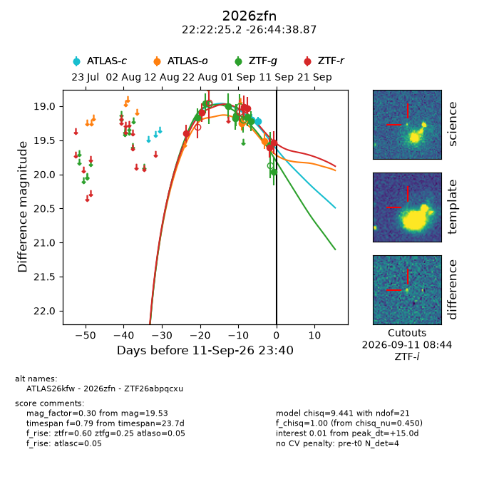
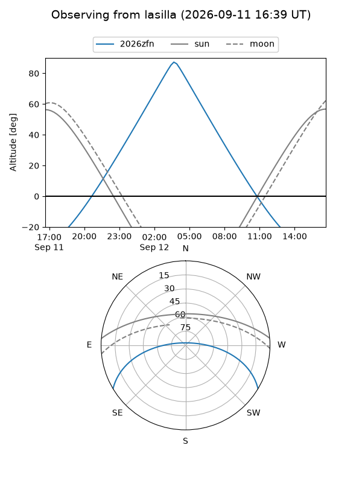
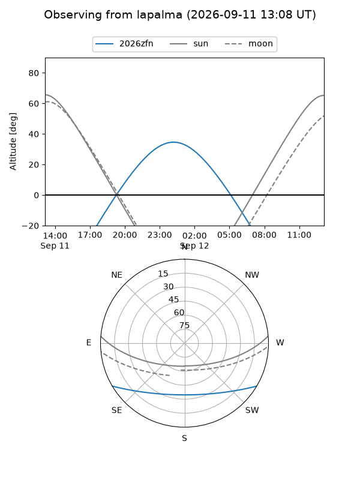
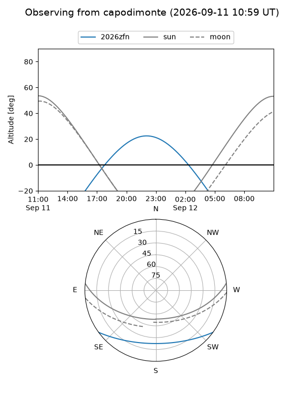
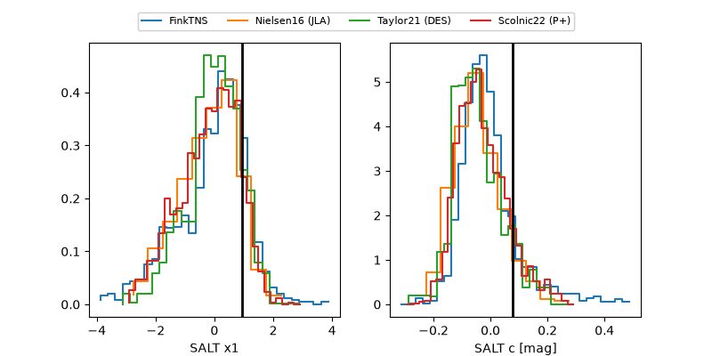

2026zfn
Target 2026zfn at 2026-09-11 23:42
Aliases and brokers:
FINK-ZTF: ztf.fink-portal.org/ZTF26abpqcxu
Lasair-ZTF: lasair-ztf.lsst.ac.uk/objects/ZTF26abpqcxu
ALeRCE-ZTF: alerce.online/object/ZTF26abpqcxu
YSE-PZ: ziggy.ucolick.org/yse/transient_detail/2026zfn
TNS name: wis-tns.org/object/2026zfn
Direct TNS query: direct search
alt names
ZTF26abpqcxu (ztf,fink_ztf)
2026zfn (tns,yse)
ATLAS26kfw (atlas)
Coordinates:
equatorial (ra, dec) = 335.6050,-26.74413
equatorial (HMS+DMS) = 22:22:25.20,-26:44:38.87
galactic (l, b) = (24.8895,-56.90916)
Flags:
TNS type: nan
peak dt: +15.0
Photometry:
last atlasc=19.22, atlaso=19.51, ztfg=19.96, ztfr=19.53
2 atlasc, 2 atlaso, 9 ztfg, 6 ztfr detections
Lightcurve

Visibility



Additional plots
